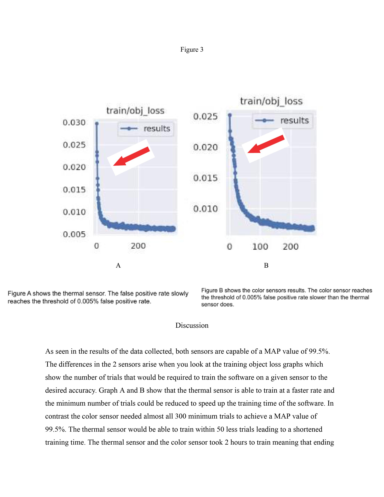

Example project
This part of the tutorial will show the expected results for the object detection model. To compare your data with the data shown go to the versions tab on roboflow and select the model and click the tab that says training graph. This will show you the results of training the object detection model.
Now if you would like to read further into the use of object detection you can read this paper by Logan Regueiferos.
